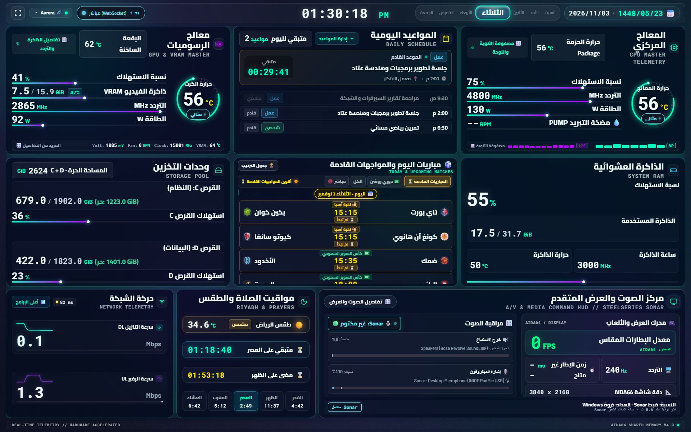
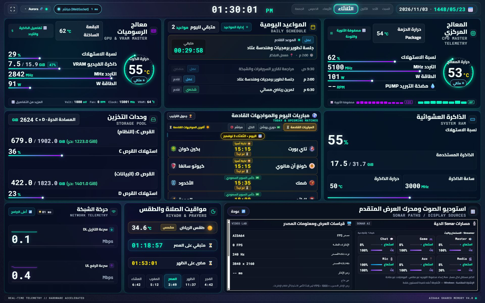

بطاقة مركز الصوت والعرض المتقدم — 2026-11-03
أُخذت نسخة احتياطية وتحققت بصمات 389 ملفًا قبل التعديل.
الواجهة أصبحت ملخصًا للعرض والصوت، مع اسم الجهاز المقاس، وحالة المايك في Sonar، وفصل نسبة الضبط عن ذروة Windows. الوجه الخلفي يحتفظ بالقنوات ومسارات الاستماع والبث والعدادات التفصيلية، مع طي الخصائص غير المتاحة.
FPS يقبل مصدر AIDA64 أو RTSS فقط، ولا يقبل Display بديلًا. زمن الإطار المحسوب موسوم بأنه نظري. أُزيل المؤثر الزخرفي، وأصبح قلب البطاقة من الزر فقط. الألوان وأبعاد البطاقة ونظام الثيمات محفوظة.
التحقق: 21 فحصًا سلوكيًا و11 اختبارًا للصوت والعدادات ناجحة. تطابقت نسب الضبط وحالات الكتم في مسارات Sonar الاثني عشر مع المصدر المباشر. اختُبرت العودة بلوحة المفاتيح، ومصدر المايك قبل/بعد Sonar، وفتح الأقسام المطوية واستعادة الاختيار الأصلي.
يوجد فشلان قديمان في اختبارات الواجهة العامة: عدد الخطوط 4 بدل 3، واشتراط GB رغم استخدام GiB. تأكد وجودهما في النسخة الاحتياطية؛ لم تُغيّر الخطوط أو وحدات البطاقات الأخرى.
تم التحقق بالبصمات من بقاء مصادر الخلفية ومكوّنات البطاقات الأخرى دون تغيير. التعديل في app.js وindex.html يقتصر على رموز إصدار تحميل البطاقة الجديدة.
قراءات FPS من المصدر المعلن؛ لم يُجرَ اختبار أداء ألعاب مستقل. الفحص لم يغيّر إعدادات الصوت أو العرض. سُجّل إعادة تحميل المضيف الأصلي في host.log؛ المعاينة البصرية تمت في المتصفح المحلي.
نتيجة التحقق وملفات التعديل · مقارنة Sonar المباشرة
الواجهة بعد التعديل

الوجه الخلفي
